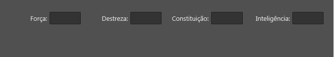
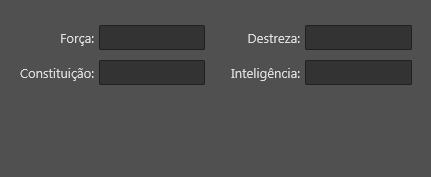
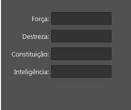

Tag flowLayout
Tag flowLayout
A tag/componente flowLayout organiza controles na interface de forma dinâmica. Excelente para criar interfaces que se adaptam a diferentes tamanhos de tela.
Os componentes que estão dentro de um flowLayout são automaticamente posicionados de forma sequencial e arranjados em linhas quando não houver espaço na horizontal.
Observação: Não é possível usar a propriedade "align" nos controles filhos desta tag.
Herança
O flowLayout possui todas as características da tag flowPart.
Veja:
Características
Além das características herdadas, o flowLayout possui também as seguintes características:
Propriedades e atributos
| Propriedade | Tipo | Valor Padrão | Descrição |
|---|---|---|---|
| autoHeight | Boolean | false | Quando true, o layout automaticamente se expande/contraí na vertical para caber seu conteúdo . |
| horzAlign | Enumerado: "leading" "center" "trailing" "justify" | "leading" | Define como os controles serão alinhados horizontalmente no layout dinâmico. "leading": Alinhados à esquerda "center": Alinhados ao centro "trailing": Alinhados à direita "justify": Alinhados de forma justificada |
| maxControlsPerLine | Integer | 0 | Quando definido definido (valor maior que zero), o layout dinâmico automaticamente realiza quebra de linhas quando a quantidade máxima de controles por linha for atingido. |
| orientation | Enumerado: "horizontal" "vertical" | "horizontal" | Define a orientação do layout. "horizontal": Os controles são dispostos em linhas. "vertical": Os controles são dispostos em colunas |
| maxColumns | Integer | 0 | Quando definido (valor maior que zero) e quando "orientation" for vertical, este valor define a quantidade máxima de colunas que o layout dinâmico deve ter. |
| lineSpacing | Float | 0.0 | Define o espaçamento entre as linhas do layout dinâmico. |
| contentWidth | Double | N/D | (Somente Leitura) Após o cálculo do layout, contém a largura do conteúdo do layout. Note que a largura do conteúdo pode ser diferente da largura do flowLayout. |
| contentHeight | Double | N/D | (Somente Leitura) Após o cálculo do layout, contém a altura do conteúdo do layout. Note que a altura do conteúdo pode ser diferente da altura do flowLayout. |
Eventos
| Nome do evento | Descrição |
|---|---|
| onBeforeLayoutCalc | Este evento é invocado antes do layout dinâmico ser calculado. |
| onAfterLayoutCalc | Este evento é invocado após o layout dinâmico ser calculado. |
Métodos
| Método | Descrição |
|---|---|
| flowLayout:needRealign() | Informa ao flowLayout que ele deve realinhar seu conteúdo. |
Veja Tratando eventos do Lua Form
Exemplos
Exemplo 1 - Layout Dinâmico de vários botões
| \<?xml version="1.0" encoding="UTF-8"?> \<form name="frmFichaTeste"> \<flowLayout left="20" top="20" width="250" autoHeight="true" orientation="horizontal"> \<button text="Botão 1"/> \<button text="Botão 2"/> \<button text="Botão 3"/> \<button text="Botão 4"/> \<button text="Botão 5"/> \<button text="Botão 6"/> \<button text="Botão 7"/> \</flowLayout> \</form> |
|---|
| orientation="horizontal" | orientation="vertical" |
|---|---|
Exemplo 2 - Layout Dinâmico usando flowPart para se ajustar a vários tamanhos de interfaces
| \<?xml version="1.0" encoding="UTF-8"?> \<form name="frmFichaTeste"> \<style> flowPart { margins: {left=5, right=5, top=5, bottom=5}; } label { width: 75; horzTextAlign: trailing; margins: {right=5}; } \</style> \<flowLayout align="client" orientation="horizontal" horzAlign="justify" margins="{left=20, top=20, bottom=20, right=20}"> \<flowPart minWidth="130" maxWidth="200" height="25"> \<label align="left" text="Força: "/> \<edit align="client"/> \</flowPart> \<flowPart minWidth="130" maxWidth="200" height="25"> \<label align="left" text="Destreza: "/> \<edit align="client"/> \</flowPart> \<flowPart minWidth="130" maxWidth="200" height="25"> \<label align="left" text="Constituição: "/> \<edit align="client"/> \</flowPart> \<flowPart minWidth="130" maxWidth="200" height="25"> \<label align="left" text="Inteligência: "/> \<edit align="client"/> \</flowPart> \</flowLayout> \</form> |
|---|
\ \ 

Neste exemplo foi utilizada a Tag style para aplicar algumas propriedades a vários controles de uma só vez. Cada Tag flowPart usada pode assumir largura entre 130 e 200.
Created with the Personal Edition of HelpNDoc: Effortlessly Create Encrypted, Password-Protected PDFs